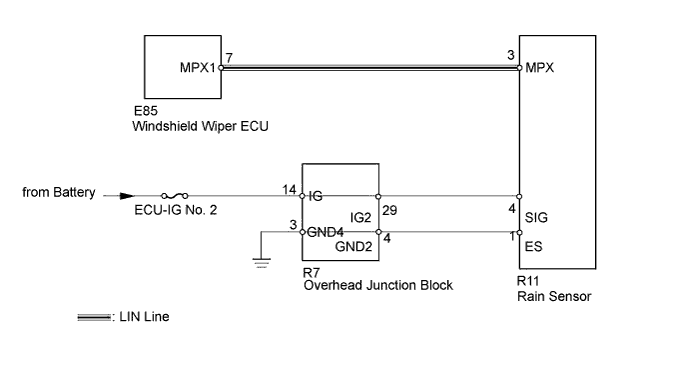
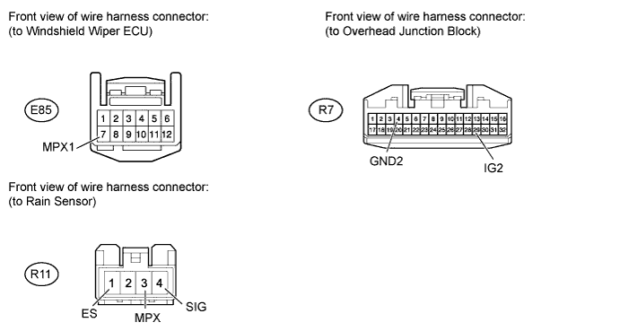

LIN COMMUNICATION SYSTEM > Rain Sensor LIN Communication Malfunction |

| 1.CHECK HARNESS AND CONNECTOR (RAIN SENSOR - WIND SHIELD WIPER ECU AND OVERHEAD JUNCTION BLOCK) |

Disconnect the E85 ECU connector.
Disconnect the R11 sensor connector.
Disconnect the R7 junction block.
Measure the resistance according to the value(s) in the table below.
| Tester Connection | Condition | Specified Condition |
| R11-3 (MPX) - E85-7 (MPX1) | Always | Below 1 Ω |
| R11-4 (SIG) - R7-29 (IG2) | Always | Below 1 Ω |
| R11-1 (ES) - R7-4 (GND2) | Always | Below 1 Ω |
| R11-3 (MPX) - Body ground | Always | 10 kΩ or higher |
| R11-4 (SIG) - Body ground | Always | 10 kΩ or higher |
| R11-1 (ES) - Body ground | Always | 10 kΩ or higher |
Reconnect the R7 junction block connector.
Measure the voltage according to the value(s) in the table below.
| Tester Connection | Switch Condition | Specified Condition |
| R11-4 (SIG) - Body ground | Engine switch on (IG) | 11 to 14 V |
|
| ||||
| OK | |
| 2.REPLACE RAIN SENSOR |
Temporarily replace the rain sensor with a new one (Click here).
Check the rain sensor function is normal.
|
| ||||
| OK | ||
| ||